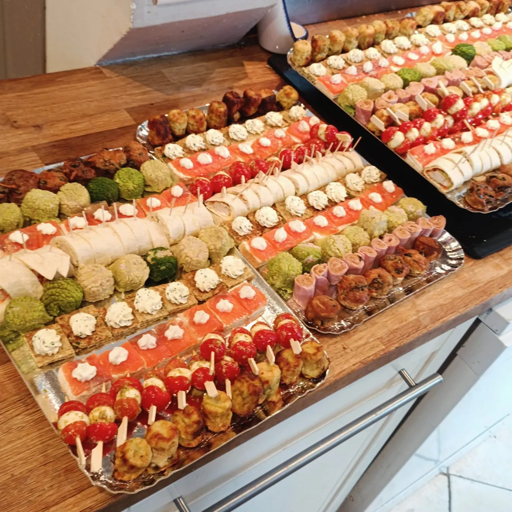
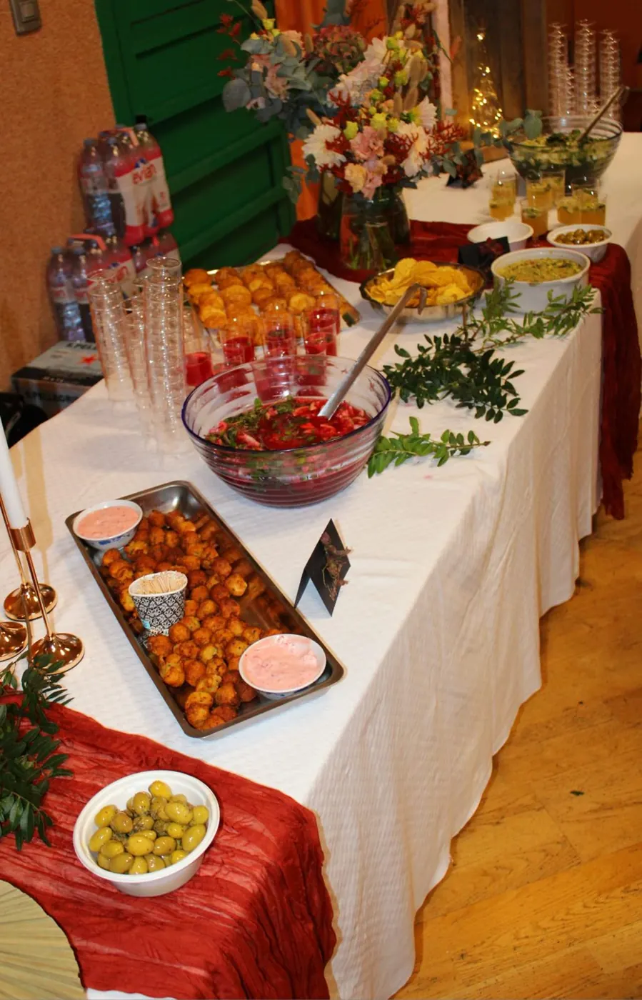

6pièces par personne
Petite collation
Quelques pièces salées et/ou sucrées pour accompagner un temps de partage court après la cérémonie.
À partir de 16 € HT / pers.
Après les obsèques, vous souhaitez peut-être réunir votre famille autour de quelques bouchées, d’un buffet ou d’un repas. Entre proches vous aide à organiser ce moment selon vos envies, le nombre de personnes et le lieu choisi.
Vous nous dites ce que vous imaginez. Nous préparons la prestation et prenons en charge son déroulement, pour que vous puissiez être auprès de vos proches.
La formule Cocktail Entre proches permet de partager un moment ensemble sans prévoir de repas à table. Elle se décline en trois formats, selon l’horaire et le temps que vous souhaitez passer avec vos invités.

6pièces par personne
Quelques pièces salées et/ou sucrées pour accompagner un temps de partage court après la cérémonie.
À partir de 16 € HT / pers.
12pièces par personne
Une formule plus généreuse pour prolonger le moment ensemble, sans organiser un repas complet.
À partir de 25 € HT / pers.
18pièces par personne
Un format qui peut remplacer le déjeuner ou le dîner, tout en conservant la simplicité d’un cocktail.
À partir de 29 € HT / pers.
L’eau, les boissons sans alcool et le café sont compris dans ces trois formats.
Demander un devis pour un cocktail
Vous préférez réunir vos proches autour d’un repas ? La formule Repas Entre proches s’adapte au moment que vous souhaitez organiser : buffet froid, chaud ou mixte, brunch, barbecue ou autre format à définir ensemble.
Nous pouvons, par exemple, commencer par quelques pièces cocktail, puis proposer un buffet à partager. Le contenu précis du repas est établi avec vous en fonction du lieu, de l’horaire et du nombre de convives.
28 € HT par personne, dégressif selon le nombre de convives.
Le prix ne correspond pas seulement à ce qui est servi. Entre proches peut prendre en charge l’organisation du moment dans son ensemble :
Le contenu exact de l’intervention est défini avec vous avant la réservation. Si vous souhaitez vous occuper vous-même d’une partie de l’organisation, nous pouvons aussi en discuter.
Prêt et gestion de la vaisselle.
+ 3 € HT par personne
Vin ou kir.
+ 4 € HT par verre
Nous pouvons prévoir des alternatives végétariennes, sans porc ou adaptées aux allergies et intolérances. Faites-nous part de ces besoins dès nos premiers échanges : tout éventuel supplément vous sera indiqué avant la validation du devis.
Entre proches intervient à domicile, dans une salle réservée ou dans un autre lieu adapté à la réception. Une cuisine équipée n’est pas indispensable : un accès à l’eau et à l’électricité suffit généralement.
Nous intervenons principalement en Île-de-France, dans l’Yonne et dans le Loiret, jusqu’à environ 1 h 30 de trajet depuis Brunoy. Nous pouvons organiser une prestation sous 48 heures. Selon nos disponibilités, un délai de 36 heures peut aussi être envisagé.
Horaires, lieu, nombre de convives, besoins alimentaires : expliquez-nous votre situation, nous regarderons ensemble ce qui est possible.
Le montant minimum d’une prestation est de 1 000 € HT. Pour un petit nombre de convives, le prix par personne peut donc être supérieur au tarif affiché pour chaque formule. Un devis vous permet de connaître le montant exact avant de vous engager.
Des frais de déplacement s’appliquent dans certaines zones : + 200 € HT pour Paris intramuros ou + 100 € HT au-delà de 50 minutes de trajet depuis Brunoy. Ils sont précisés dans le devis.
Un acompte de 30 % confirme la réservation. Le solde est réglé le jour de la prestation ou le lendemain, par virement, chèque ou espèces.
Oui. La petite collation de 6 pièces par personne est prévue pour un temps de partage court. Le minimum de prestation de 1 000 € HT s’applique également à cette formule.
Il précise la formule choisie, le nombre de convives, le contenu de la prestation, les éventuelles options et les frais de déplacement applicables. Vous connaissez ainsi le montant et les modalités d’intervention avant de confirmer.
Les plats non consommés restent à votre disposition. Nous prévoyons de quoi les conditionner à la fin de la réception.
Vous pouvez modifier le nombre définitif jusqu’à 48 heures avant la prestation. Si la réservation est faite moins de 48 heures avant, le nombre annoncé lors de la commande sert de base à la facturation.
Non. Selon la prestation et le lieu, nous pouvons apporter le matériel nécessaire. Nous avons au minimum besoin d’un accès à l’eau et à l’électricité.

Vous n’avez pas besoin d’avoir déjà décidé entre une collation, un cocktail ou un repas. Indiquez-nous la date, le lieu et une estimation du nombre de personnes. Nous vous aiderons à choisir une formule adaptée et à en connaître le coût.
Demander un devis